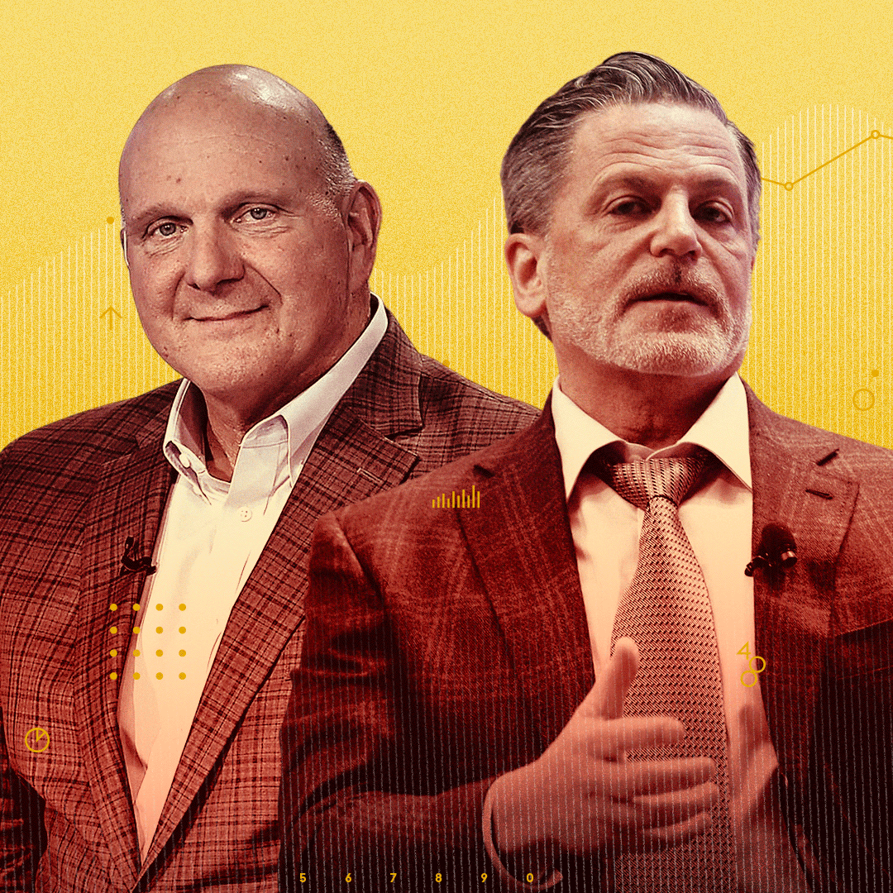

The Value of Winning
If there’s one constant in sports in the era of massive TV rights deals it’s this: the values of teams go up, practically always. But by how much, and does performance have a serious impact on the change in value of a…